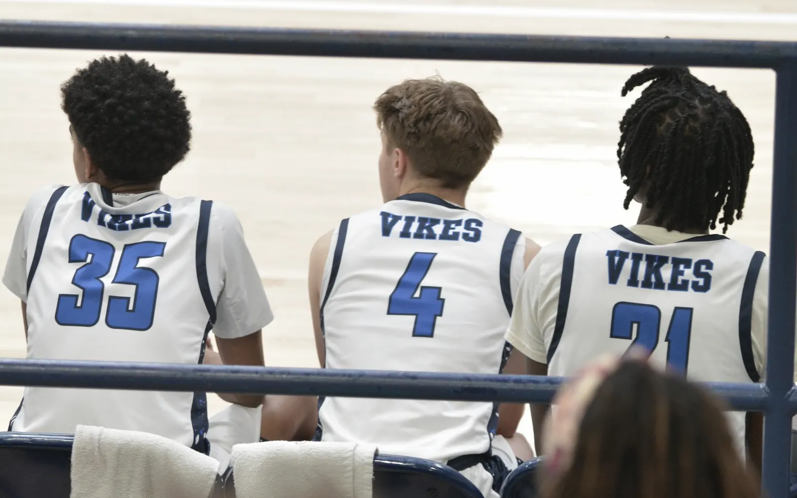

About
What helps leaders grow, brought to the bench.
The Quiet Edge applies the tools of leadership development to the two people who matter most in youth sport: the athlete, and the parent beside them.

How these tools are built
The Quiet Edge adapts evidence-based coaching methods Julian, an ICF PCC coach, uses with senior leaders in executive education, including positive psychology, validated assessments, and leadership development frameworks. Each tool is refined using established sports psychology research and tested in real use with athletes and families, including our own. AI helps draft and voice the content. Julian selects, adapts, and checks every tool against current research before it ships. These are educational tools, not therapy or clinical care.
Founder
Julian
ICF Professional Certified Coach (PCC). Facilitator. Sports parent.
I spend my days with senior leaders, and the best ones aren't the ones with the answers. They're the ones who ask the best questions. At home, my wife and I try to live the same way, with the grandparents, the friendships, and the talk after the talk. It's honest, it's harder than it sounds, and we don't always get it right. We push when we should ease off, and we feel how loud a sideline gets and how quiet the car can be.
Coaches push and clubs build the structure, and kids need both. But nobody grows because they were told to. Growth sticks when a kid has their own hands on the wheel. Too often, the adults who love them most take that chance away without meaning to. The Quiet Edge gives the whole family what great leaders need: space to reflect, better questions, and no judgment. That's how kids win on the scoreboard, at home, and long after the last whistle.
I lead by listening. When a club wants a parent session, I can lead it. Athletes keep working with their own coaches, and with the episodes and workbooks at home.
Julian

Principles
What we hold to.
- 01
The internal game leads.
External results follow the work no one sees.
- 02
Confidence is built.
It comes from experience, not from praise.
- 03
Early pressure costs later potential.
Kids who love the game stay long enough to become good.
- 04
Mental skills are trained.
As deliberately as any physical skill.
- 05
Parents and coaches shape development.
So both get the playbook.
Foundations
Rooted in youth-sport research.
The design draws on studies of parent education in youth sport (Dorsch et al., 2017), the car ride home (Tamminen et al., 2017), autonomy-supportive parenting (Harwood & Knight, 2015) and mastery-focused team climates (Smith, Smoll & Cumming, 2007).
The Quiet Edge is an educational program. It complements coaches, sport psychologists and mental-performance consultants, and it is not therapy, counseling or medical care.